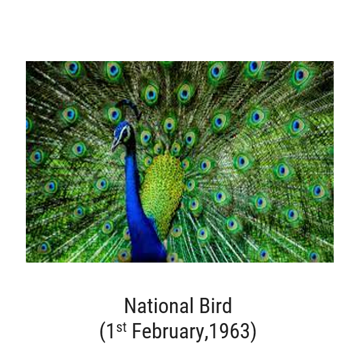
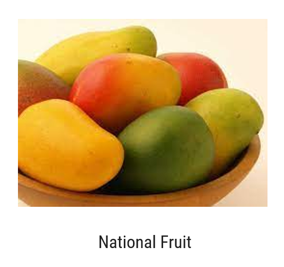

National bird
- The Peacock is the national bird of India.
- Its scientific name is Pavo cristatus.
- It is protected under the Wildlife Protection Act, 1972.

National flag
- The national flag of India is called the Tiranga, which has three colors: Saffron (top), White (middle), and Green (bottom).
- The Ashoka Chakra in the center has 24 spokes and represents truth, law, and progress.
- The Indian national flag was adopted on 22 July 1947, just before India became independent.

National fruit
- It is called the “King of Fruits” because of its sweet taste and rich nutrition.
- Mango is rich in vitamin A, vitamin C, and fiber.
- India is the largest producer of mangoes in the world.